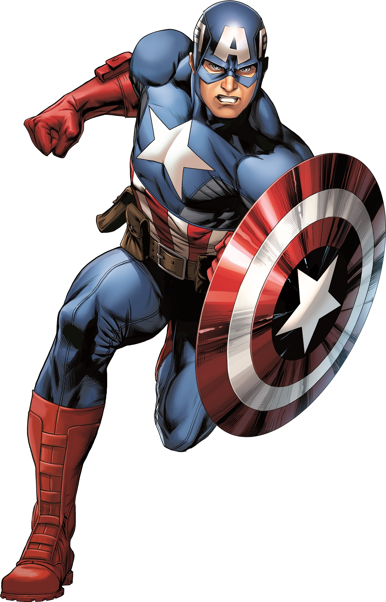

Captain Steven Grant "Steve" Rogers is a World War II veteran, a
founding member of the Avengers, and Earth's first known superhero.
Rogers grew up suffering from numerous health problems, and upon the
United States' entry into World War II, he was rejected from serving
in the United States Army despite several attempts to enlist. Rogers
ultimately volunteered for Project Rebirth, where he was the only
recipient of the Super Soldier Serum developed by Abraham Erskine
under the Strategic Scientific Reserve. The serum greatly enhanced
Rogers' physical abilities to superhuman levels. After Erskine's
assassination and being doubted by SSR head director Chester Phillips,
Rogers was relegated to performing in war bond campaigns, where he
posed as a patriotic mascot under the moniker of Captain America.

Anthony Edward "Tony" Stark was a billionaire industrialist, a
founding member of the Avengers, and the former CEO of Stark
Industries. A brash but brilliant inventor, Stark was self-described
as a genius, billionaire, playboy, and philanthropist. With his great
wealth and exceptional technical knowledge, Stark was one of the
world's most powerful men following the deaths of his parents and
enjoyed the playboy lifestyle for many years until he was kidnapped by
the Ten Rings in Afghanistan, while demonstrating a fleet of Jericho
missiles. With his life on the line, Stark created an armored suit
which he used to escape his captors. Upon returning home, he utilized
several more armors to use against terrorists, as well as Obadiah
Stane who turned against Stark. Following his fight against Stane,
Stark publicly revealed himself as Iron Man.

Sometimes student, sometimes scientist and sometimes photographer,
Peter Parker is a full-time super hero better known as the
web-slinging and wall-crawling Spider-Man. As an orphaned child, Peter
was raised by his Uncle Ben and Aunt May. At a science expo, Peter was
bitten by an errant radioactive spider which granted him an array of
arachnid powers. He initially became Spider-Man to use his powers as
an entertainer, growing so conceited he didn't bother stopping a
passerby burglar. In a twist of fate, the same burglar wound up
killing Peter's Uncle Ben, leading him to realize that he needed to
use his powers responsibly.[30] From then on, Spider-Man became a
crime-fighting vigilante.[125]

Doctor Robert Bruce Banner, M.D., Ph.D., is a renowned scientist and a
founding member of the Avengers. Highly respected for his work in
biochemistry, nuclear physics and gamma radiation, Banner was tasked
by Thaddeus Ross to recreate the Super Soldier Serum that created
Captain America. However, Ross elected not to inform Banner what he
was creating. During the experiment, Banner substituted vita radiation
for gamma radiation and administered the serum on himself. As a
result, the mild-mannered scientist found that when angered, provoked
or excited, his body and brain would transform into a huge,
rage-fueled, primitive-minded creature known as the Hulk.

Colonel James Rupert "Rhodey" Rhodes is an officer with the United
States Air Force and liaison between the military in the Department of
Acquisitions and Stark Industries, where he became close friends with
Tony Stark. When Stark had been kidnapped by the Ten Rings, Rhodes
personally led a mission to rescue his best friend. However, upon
their return, Rhodes saw Stark moving away from developing his weapons
for the military and soon discovered that he was instead focusing on
becoming a hero known as Iron Man. Despite all of his fears for his
friend's safety, Rhodes still joined Iron Man in bringing down Obadiah
Stane's schemes, while trying to keep Stark's secrets, only for Stark
to reveal them to the media himself. With Iron Man's identity known,
Rhodes found himself under pressure from the United States Congress
and the military to take possession of the armor for himself,
something that he was against. However, as Stark's reckless behavior
got even worse, Rhodes had no choice but to take the Mark II before
handing it over to the military, with Justin Hammer upgrading it with
his new weapons to rebrand Rhodes as War Machine. However, just when
War Machine was being presented to the world, Ivan Vanko returned and
attacked the Stark Expo with an army of Hammer Drones, as War Machine
teamed up with Iron Man to bring him down, resulting in Rhodes keeping
the armor for himself, despite Stark's continued objections.